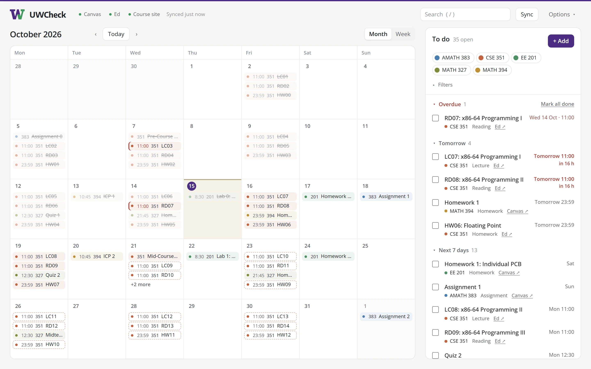
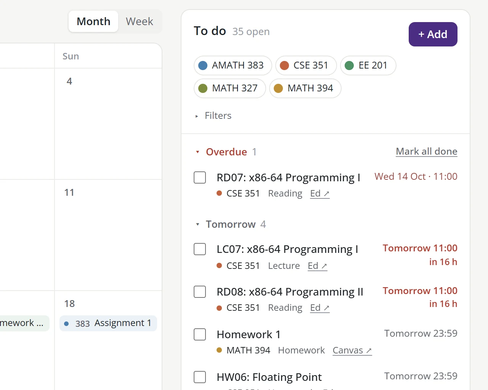
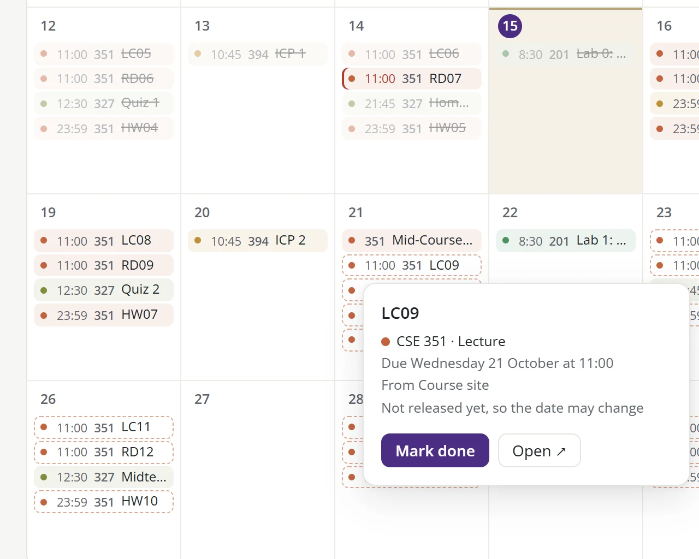
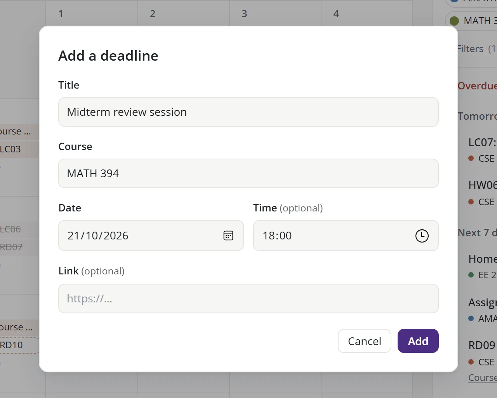

A to-do list that writes itself
Every open deadline from Canvas and Ed, sorted by when it's due. Tick things off as you go, or jump straight to the assignment.

See homework before it's posted
UWCheck also reads CSE course websites, so work shows up before it's released. A dashed outline means the date may still change.

Add your own deadlines
Midterm review, a club meeting, anything that isn't on Canvas.

Private by design
UWCheck runs entirely on your own computer. Your Canvas and Ed details are saved there and only ever sent to Canvas and Ed.
Install
- Download and install Node.js (pick the LTS version). UWCheck needs it to run.
-
Search the Start menu for Command Prompt (on a Mac, open Terminal), then paste this in and press Enter:If it asks “Ok to proceed?”, press Enter again.
npx uwcheck@latest --install - UWCheck opens on its Settings page. Paste in your Canvas calendar link (in Canvas, open Calendar and click Calendar Feed). If you use Ed, also add an Ed API token. Then click Save & sync.
After that, open UWCheck like any other app. To add course websites and more, see the full guide.